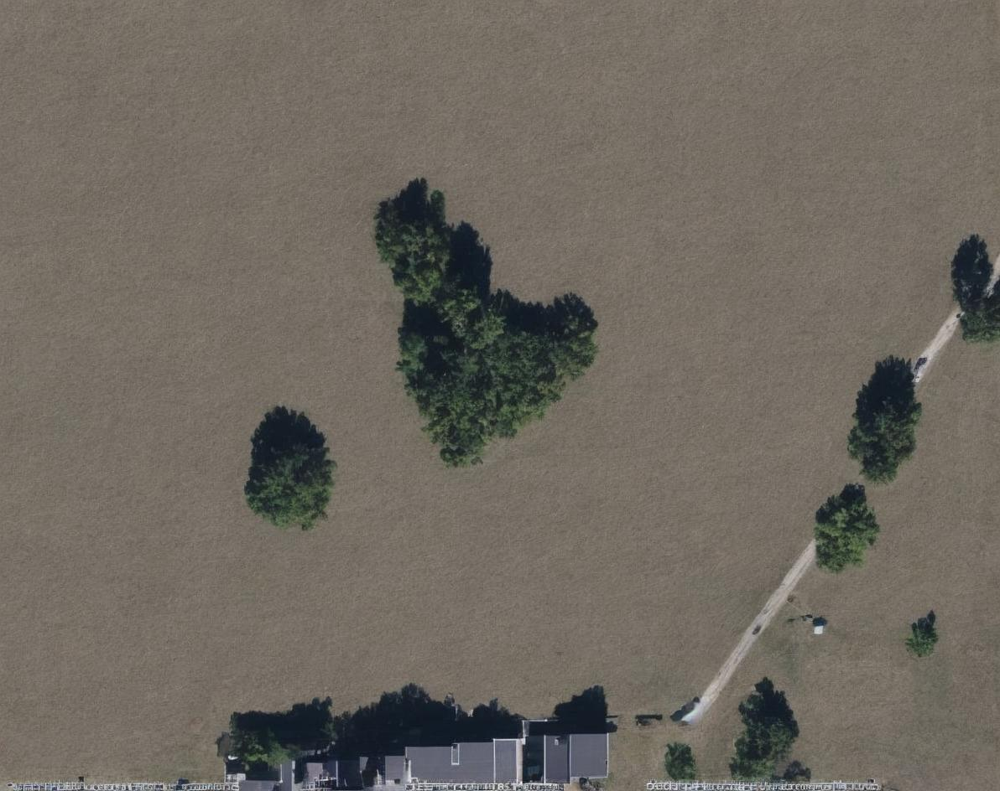
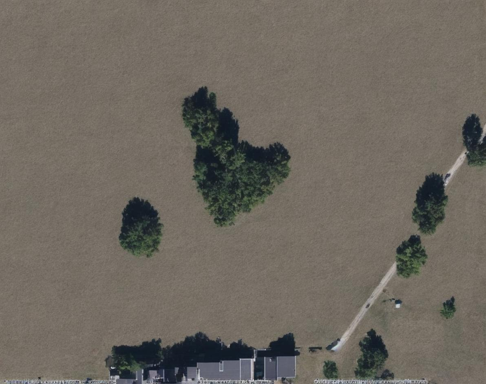

The Terminal Vision [1] displays on the screen of SCA-1 a series of moving-images of the Earth landscape looking down from the satellite, as if the SCA Satellite documents what it sees as it slowly hovers across the Low Earth Orbit. The Terminal Vision is a simulated and imagined reality of the Earth seen at planetary scale, or rather this is the visual condition of the Earth we hope us to urgently see and confront today. These are prompted glimpses of city ruins, destructions, flooding, oil spoils, as well as views of temple labs, empty bunkers, man chopping trees, future city resorts…
In this first iteration of the total three-track satellite imagery project, Satellite Image Exchange, the artists generate a series of satellite imagery of their own planetary vision from an archive of still photographs they have captured themselves. Each photographic image is therefore mediated into the artists’ self-defined descriptive prompts and a map tile with the image’s geographic coordinates, before being generated into each Earth landscape still with AI processes.
This Earth landscape the satellite flies across is synthesized land. Presented in the vertical perspective of satellite imagery, the images are not only merely documentation or monitoring of all conditions of Earth, but they contain complex realities and representation of gaze produced from the past and present “visual machines,” from the tradition of aerial photography, satellite remote sensing, drone footage, to our everyday photographic captures, and generative AI image models. Rather than acquiring data, however, this “art satellite” displaying our work functions as an emissive platform—the resulting AI-generated landscape is a speculative terrain generated by systems designed to reproduce, extract, and simulate. As much as the synthetic landscapes are imagined, they are the most realistic in simultaneously manmade and machine-generated visions.
The next two sequences, in 2025 and 2026, are titled The Terminal Simulation & The Terminal Erasure.
We usually share pieces of our visions from and of the world with our mobile devices via the internet, which are also horizontal visions emitting into the world. Each of our uploaded photographic image captures is a pixel that makes up how our world and planet looks horizontally on the micro scale, while the satellite image is the vertical vision of our world and planet on the macro scale. Each of our horizontal photographic captures is now to be exchanged for a vertical satellite vision. We upload and share photographs we have captured from our daily lives with each other, starting to weave an image network that links Shanghai and Montreal, streets in Southeast Asia and towns in Northeast America…
Whenever a computational photograph is captured by our mobile devices, the metadata of each image will instantly be recorded for possible image processing, analysis, tracking, training for AI models etc. The image metadata we use for this project include: the timecode and the geographic coordinates (longitude and latitude) of each photo at the moment it is captured. Both the geographic coordinates and timecode have been used to set marks as the gateway to communicate with the satellite. Instead of extracting the metadata, we’re recollecting and reorganizing the time and location of each photographic moment to weave a map of images of our own.
Coordinates: 31.389600, 121.522500
Location: 上海，中国
Recorded: 2024-12-19 14:24 GMT+8
Metadata of each original photographic image (its geolocation coordinates and capturing time) was used to identify a map tile of the image’s location with OpenStreetMap [2]. The map is like a virtual portal linking the photographic record of the real world and a satellite projection of a speculative vision—it’s where the horizontal to vertical perspective-change happens. The gesture and perspective of looking at maps resembles the perspective of looking at Earth images monitored by the satellite. And it is not only about looking at, but the process of map-making, including the history of gridding, digging, post-holing, exploring, extracting, manipulating, abusing, overtaking, and controlling, unfolds similar desires in the identifying, classifying, tracking processes when monitoring and surveilling with satellite images. Each map tile provides a reference terrain of the original landscape of each situated photographer’s vision, which will be used to layer the AI-generated satellite imagery with.
Labeling therefore has been crucial in identifying landscapes and targeting objects in processing satellite imagery. We labeled each image with our self-defined classification labels (in response to the labeling process of satellite imagery used by monitoring institutions), such as “border of Vietnam and China” and “security border” in this case below. We’re self-defining “classifications” and “labels” to each photographic image in order to reverse generate the landscape we wish to see. As we describe and label each image we’ve taken, we’re redefining what the seemingly “neutral” camera machine has captured, infused now with our own emotional and subjective speculations. It’s a process of interpreting, pausing, and reinterpreting.
 

With the labels, we created AI-generated satellite images with an open-source model called GeoSynth [3], to replace each respective map tile and geographic region with the context and visions seen from each original photograph. GeoSynth is a suite of ControlNet adapters fine-tuned on Stable Diffusion, enabling the generation of high-resolution satellite images conditioned on OpenStreetMap map tiles. It offers us a great tool and thinking model to reverse construct satellite images based on fictional labels and terrain spatial layout references. Working with GeoSynth’s database also leads us to access preexisting categories of what “satellite images” have been about, such as “city,” “factory,” “military camp,” “farmland” (sample reference prompts from GeoSynth). We’re now able to reconstruct an uncannily realistic landscape, with slight touches of the imaginative and fantasized views, as if it is really seen from the satellite’s eyes.
One image from the variations of the satellite image was selected to generate an expanded video clip using Runway Gen-4. Each satellite video hovers and pans across the Earth.

The decay and change we see in the real landscape are also mediations of planetary computation haunted by our desire, memory, fear, and power, generated in emotion and contemplation. Evolutions of both vertical image-surveilling and horizontal image-capturing are mediating into more complex satellite visions which we are all entangled in. In The Terminal Vision, we’re displaying our concern and calling for the climate, about the capitalistic extractions, evolving consequences of human conflicts, inevitably advancement of technological acceleration…
A newly formed collective conducting practice-led research that works to reimagine planetary projections and map-making methods to examine colonial historic archives and contemporary technologies.
hua xi zi is an artist and researcher working between productions of images, performances, and network infrastructures. 曾参与中国美术学院的“网络社会研究所”主办的“AIathon艺能松”并获“发明家奖”（2023），她的媒体装置和表演创作的个人展览于成都“画清池”举办（2023），曾作华东师范大学公共艺术系“网络艺术与虚拟空间”课程讲师（2022、2024）。毕业于芝加哥艺术学院修获电影、录像、新媒体艺术硕士学位，于南加州大学电影学院修获电影媒体研究学士学位。
Patrick O’Shea is an artist and technologist whose work spans sound, documentary film, coding, engineering, and robotics. His collaborative film projects have been presented at MoMA Doc Fortnight, Locarno Film Festival, and other international venues, while his digital media work has appeared at Ars Electronica, The Wrong Biennale, and others. O’Shea holds an MFA from the Art Institute of Chicago and a BA in Anthropology from the University of Vermont. Alongside his artistic practice, he works as a research and development technologist and has held teaching fellowships in computational art and design.